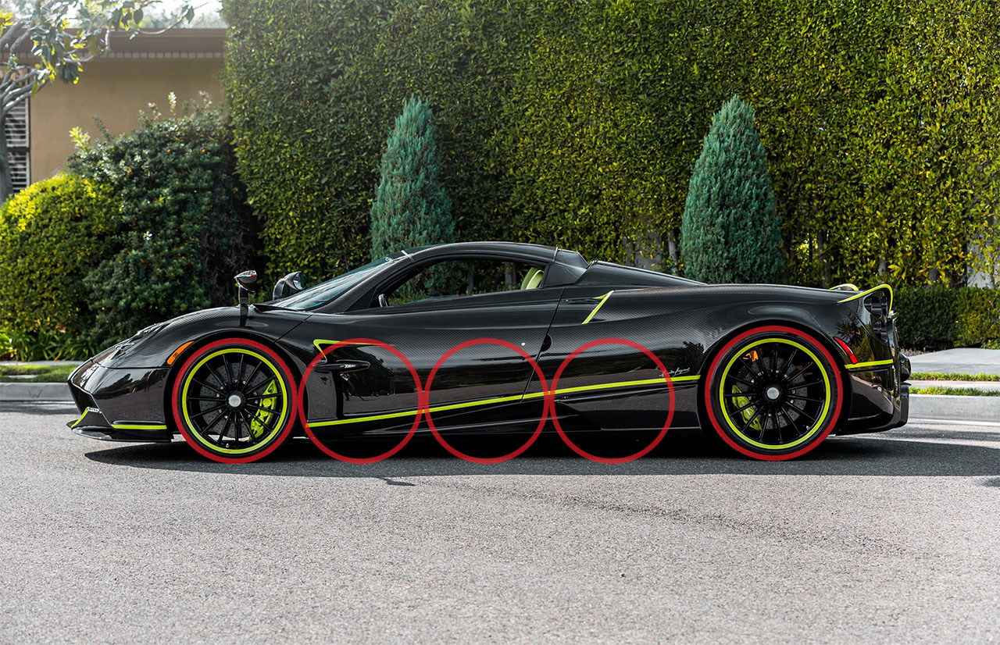
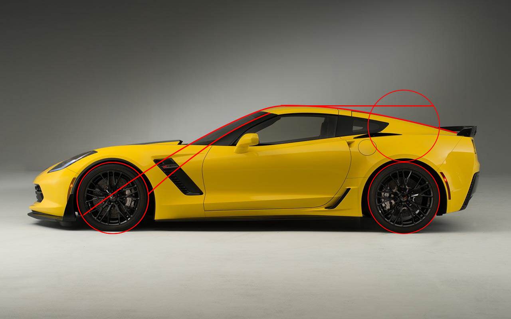

Establish the balance, affirms utility | proportion
Desain otomotif tidak hanya sekedar menetapkan tampak pada kendaraan agar terlihat bagus, tetapi juga mengirimkan pesan kepada yang melihatnya tentang fungsi spesifik kendaraan tersebut dan juga pengalaman yang akan dirasakan saat menaikinya.
Dalam mendesain sebuah kendaraan, dalam pembahasan ini adalah sebuah mobil, terdapat hal-hal yang perlu diperhatikan agar informasi yang diterapkan melalui desain dapat diterima dengan jelas. Salah satu hal tersebut adalah proporsi. Proporsi pada dasarnya menetapkan keseimbangan serta relasi antara satu bagian dengan yang lainnya. Proporsi juga dapat menciptakan sebuah karakter pada objek yang akan dibangun.
Berikut merupakan hal-hal yang mempengaruhi proporsi sebuah mobil.
Wheelbase
Wheelbase atau sumbu roda adalah jarak antara roda depan dengan roda belakang mobil. Sumbu roda yang ideal terpisah antara dua hingga tiga roda bahkan lebih. Sumbu roda yang pendek memberikan kemampuan bermanuver yang baik, sedangkan sumbu roda yang panjang meningkatkan kestabilan pada mobil dan juga ruang untuk penumpang maupun mesin.

Pagani Huayra memiliki sumbu roda berjarak tiga roda lebih. Sumbu roda yang panjang ini memberi ruang untuk mesin berkapasitas besar yang terletak ditengah mobil. Hal ini membuat mobil ini stabil dikarenakan letak titik beratnya berada ditengah mobil.
Mobil Smart Fortwo memiliki sumbu roda pendek yang membantunya dalam bermanuver di jalan kecil di perkotaan serta memangkas berat mobil agar mencapai efisiensi produksi serta konsumsi bahan bakar.
Ground Clearance
Ground clearance merupakan jarak antara bodi mobil dengan permukaan tanah. Mobil dengan ground clearance yang tinggi memiliki kapabilitas off-roading atau melewati jalan yang tidak rata seperti bebatuan dan lumpur. Berbeda dengan mobil yang memiliki ground clearance rendah, yang mendapat keuntungan dalam hal aerodinamis karena tidak terdapat turbulensi pada kolong mobil saat melaju dengan kecepatan tinggi.
Mobil dengan kapabilitas off-road seperti Land Rover Defender memiliki ground clearance berjarak lebih dari setengah tinggi roda hingga kurang dari tinggi satu roda.
Ferrari Roma yang merupakan mobil sport memiliki ground clearance yang rendah agar dapat memaksimalkan aerodinamis pada kolong mobil. Jarak antara bodi mobil dengan permukaan tanah yang kecil memampatkan dan mengarahkan angin di kolong mobil untuk melewati diffuser yang berada di belakang mobil. Diffuser bekerja seperti sayap pada pesawat namun secara terbalik, mengarahkan angin ke atas dan menghasilkan downforce.
Overhang
Overhang adalah bagian mobil yang melewati sumbu roda di depan dan belakang. Overhang berpengaruh terhadap keseimbangan mobil baik pada performa maupun visual. Handling yang responsif dimiliki oleh mobil dengan overhang yang pendek. Di sisi lain, overhang yang panjang memberikan ruang pada mobil untuk kepraktisan maupun menambah aerodinamis mobil.
Audi R8 memiliki overhang dengan panjang satu setengah roda lebih pada bagian depan sehingga memiliki ruang bagasi depan yang cukup luas serta keamanan bila terjadi tabrakan. Selain itu, overhang yang panjang membuat aerodinamis mobil meningkat dengan melandaikan bagian depan mobil.
Mobil kota seperti Mini Cooper memiliki overhang yang pendek pada sisi depan maupun belakang. Hal ini membantu pengendara dalam mengukur dimensi mobil saat melewati jalan sempit. Pengendara juga dapat mengendalikan mobil dengan mudah karena lebih responsif.
Greenhouse
Greenhouse merupakan kesatuan bagian mobil yang terdiri dari kaca, pilar, dan atap mobil. Oleh karena itu, hal-hal yang perlu diperhatikan menjadi beragam seperti ketinggian, posisi greenhouse, serta sudut yang dibentuk oleh kaca depan dan atap mobil.

Lexus LM300h merupakan mobil berkelas luxury MPV, sehingga mobil ini mengedepankan sisi ergonomis-nya dengan greenhouse yang tinggi, atap mobil yang rata, serta kaca depan yang apabila ditarik garisnya, akan berjarak satu roda dari roda depan.

Mobil sport Chevrolet Corvette memiliki greenhouse dengan kaca depan yang landai serta berada di belakang roda depan. Atap yang landai serta hanya memiliki tinggi kurang dari dua roda dari tanah membuat mobil ini menjadi lebih aerodinamis dan stabil.